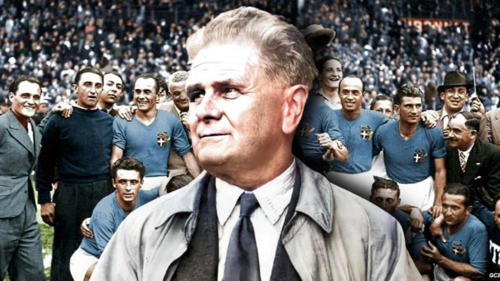
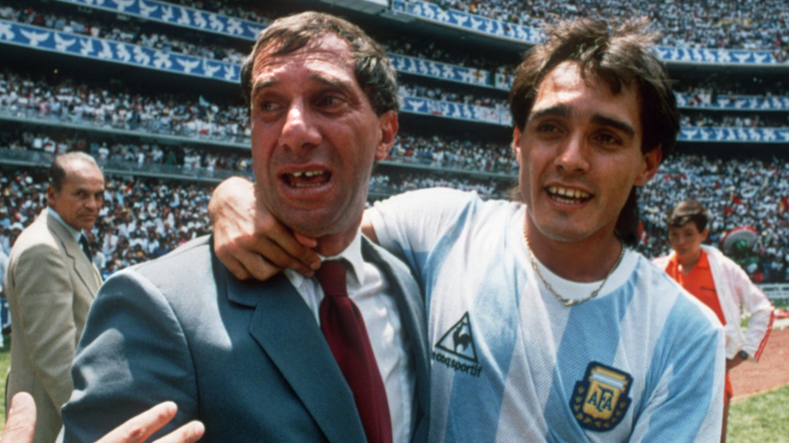
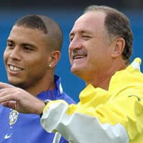
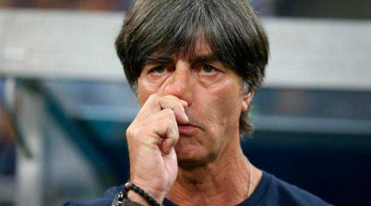
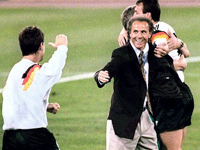
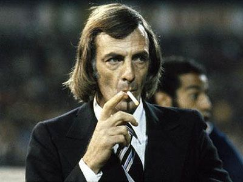
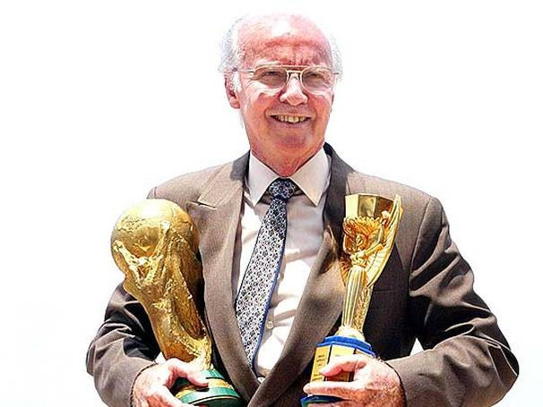
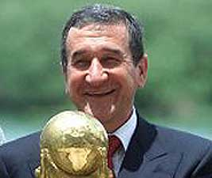

TOP 10 DIRECTORES TÉCNICOS DESTACADOS


Vittorio Pozza | Campeón del mundo 1934 y 1938 con Italia

Carlos Bilardo | Campeón del mundo en 1986 con Argentina

Luiz Felipe Scolari | Campeón del mundo en 2002 con Brasil

Joachim Löw | Campeón del mundo en 2014 con Alemania

Vicente del Bosque | Campeón del mundo con España en 2010

Lionel Scaloni | Campeón del mundo con Argentina en 2022

Franz Beckembauer | Campeón del mundo con Alemania en 1990

César Luis Menotti | Campeón del mundo con Argentina en el año 1978

Mario Zagallo | Campeón del mundo con Brasil en 1970

Carlos Alberto Parreira | Campeón del mundo con Brasil en 1994